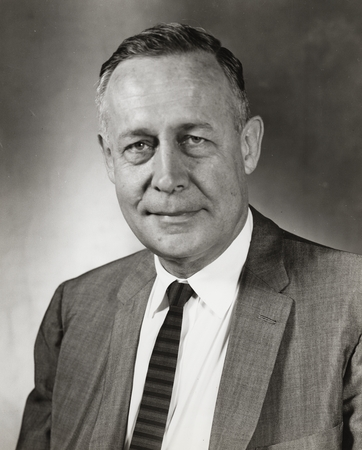

Llamamos al resultado calentamiento global pero está provocando una serie de cambios en el clima de la Tierra o patrones meteorológicos a largo plazo que varían según el lugar. Conforme la Tierra gira cada día, este nuevo calor
gira a su vez recogiendo la humedad de los océanos, aumentando aquí y asentándose allá. Está cambiando el ritmo del clima al que todos los seres vivos nos hemos acostumbrado.

En la década de 1950, la investigación sugirió un aumento de las temperaturas y un periódico de 1952 comunicó un «cambio climático». Después, esta frase apareció en un informe de noviembre de 1957 en The Hammond Times que describe
la investigación de Roger Revelle sobre los efectos del aumento de las emisiones antrópicas de CO2 en el efecto invernadero: «puede resultar en un calentamiento global a gran escala, con cambios climáticos radicales». Se usaron ambas
frases solo ocasionalmente hasta 1975, cuando Wallace Smith Broecker publicó un artículo científico sobre el tema: «Cambio Climático: ¿Estamos al borde de un calentamiento global pronunciado?». La frase comenzó a entrar en uso común y
en 1976 la declaración de Mijaíl Budyko que «ha comenzado un calentamiento global» fue ampliamente difundida. Otros estudios, como el informe del MIT de 1971, se refirieron al impacto humano como una «modificación climática inadvertida»,
pero un influyente estudio de 1979 por la Academia Nacional de Ciencias de Estados Unidos, encabezado por Jule Charney, siguió a Broecker en el uso de calentamiento global para el aumento de las temperaturas superficiales, mientras que
describió los efectos más amplios del aumento de CO2 como cambio climático.

El “efecto invernadero” es el calentamiento que se produce cuando ciertos gases de la atmósfera de la Tierra retienen el calor. Estos gases dejan pasar la luz pero mantienen el calor como las paredes de cristal de un invernadero.
En primer lugar, la luz solar brilla en la superficie terrestre, donde es absorbida y, a continuación, vuelve a la atmósfera en forma de calor. En la atmósfera, los gases de invernadero retienen parte de este calor y el resto se
escapa al espacio. Cuantos más gases de invernadero, más calor es retenido.
Los científicos conocen el efecto invernadero desde 1824, cuando Joseph Fourier calculó que la Tierra sería más fría si no hubiera atmósfera. Este efecto invernadero es lo que hace que el clima en la Tierra sea apto para la vida.
Sin él, la superficie de la Tierra sería unos 60 grados Fahrenheit más fría. En 1895, el químico suizo Svante Arrhenius descubrió que los humanos podrían aumentar el efecto invernadero produciendo dióxido de carbono, un gas de invernadero.
Inició 100 años de investigación climática que nos ha proporcionado una sofisticada comprensión del calentamiento global.
Buena parte de la comunidad científica ha empezado a usar los términos crisis climática y emergencia climática en lugar de calentamiento global o cambio climático, con el fin de precisar la gravedad de la situación actual. En junio de 2019,
tales expresiones han sido incorporadas a las recomendaciones de Fundéu BBVA a los medios de comunicación en español. Oxford Dictionary eligió emergencia climática como la palabra del año 2019.